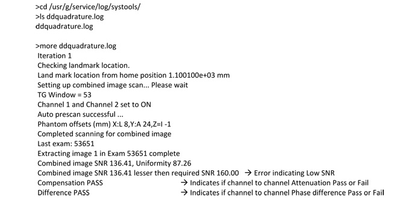
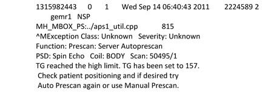
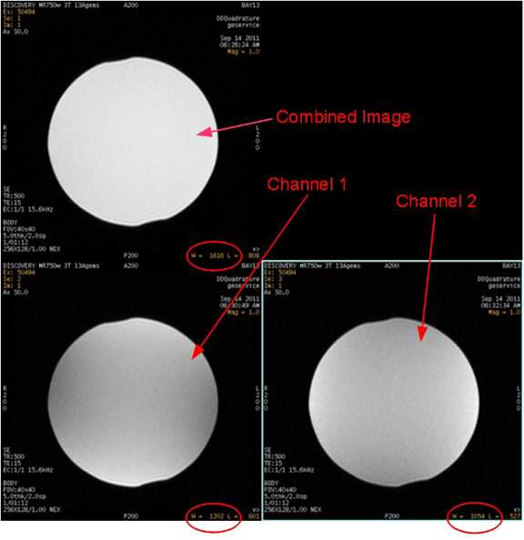
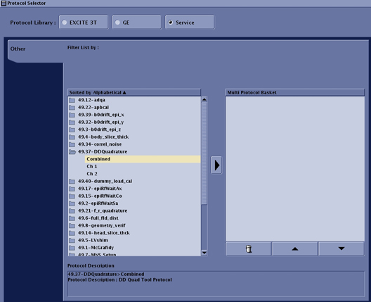
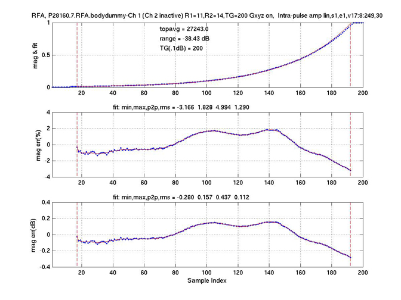
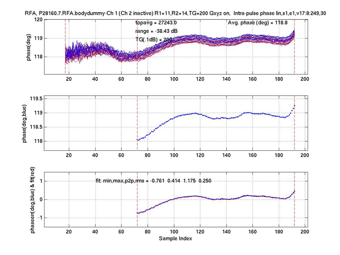
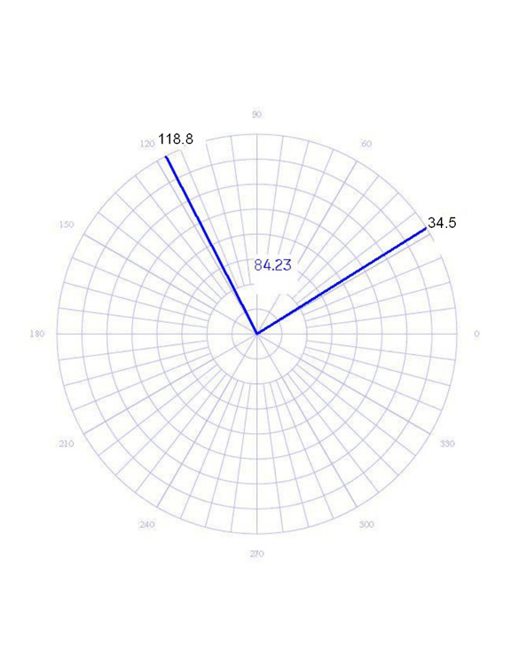
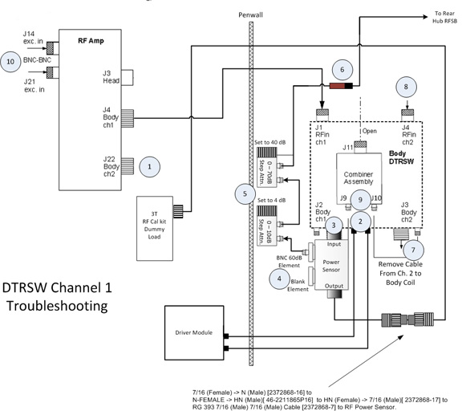
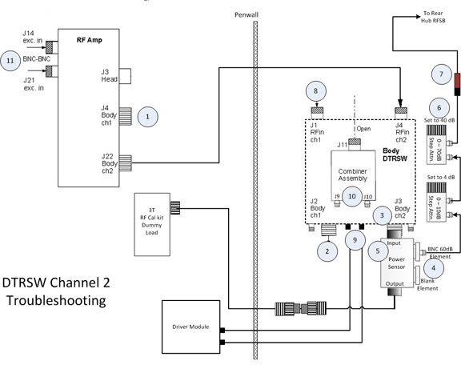

GE Exclusive Use Only
Direction 5670006, Rev# 1
Discovery MR750w GEM Service Methods
Module Version 2.0, Version Date 10/18/11
GE Exclusive Use Only |
The MR750w supports a Dual Drive RF Transmit Chain, referred to as Channel 1 and Channel 2. The signals for both channels originate from the Exciter and are sent to the Dual Drive RF Amplifier, where they are amplified to a maximum of 15kW per channel for Body Coil Mode Only. The RF Output riding on the T/R pulse is sent to the Dual Transmit Receive Switch (DTRSW) and then to the RF Body Coil. As there are two RF signals, this redundancy can be used to troubleshoot the RF output.
For more information, see
Dual Drive Theory for information on how Dual Drive works.
Dual Drive 3.0T RF Amp Troubleshooting for information on troubleshooting the Dual Drive RF Amplifier.
Dynamic Disable and T/R Troubleshooting Manual for information on Dynamic Disable and T/R Pulse Errors.
| ||||
| Equipment Damage can occur if process and procedures are not followed. | ||||
| The MR750W Transmit chain has significantly changed. | ||||
| Extra care should be taken to familiar yourself with the Transmit chain and new procedures before attempting to troubleshoot |
| ||||
| RF body coil damage can occur if RF is pulsed with only one of the TWO transmit cables between the Body coil and DTRSW connected. Dynamic disable (DD) bias is now delivered from the DTRSW through both transmission lines to the RF body coil. | ||||
| The damage occurs when the PIN switching diodes in the side of the RF body coil that is deprived of DD bias, due to the disconnected transmission line, are exposed to more RF energy than each can withstand. | ||||
| These transmission lines must remain connected whenever pulsing any RF energy to body coil. |
| ||||
| DTRSW and Combiner failures can occur if either channel 1 or channel 2 RF transmission line cables between the DTRSW and RF amplifier are disconnected and RF energy is pulsed to the DTRSW on the remaining connected line. | ||||
| The damage happens when RF energy is coupled by the RF body coil into the side of the DTRSW deprived of TR bias due to the disconnected line. | ||||
| These transmission lines should remain connected whenever pulsing any RF energy from RF amplifier to the DTRSW. |
If the Dual Drive Quad Calibration Tool is not functioning properly, use Table 1 to see a list of potential symptoms and some steps to use to resolve the issue. Typically, there are three failing areas; Low SNR, Large Phase error, and Low Signal on one or both of the transmit channels.
The Dual Drive Quadrature Calibration Tool generates a log file. However, there is no GUI Viewer for it. To access this log, open a c-shell and type:

Table 1: Symptoms and Next Steps
| Symptom | Next Step(s) |
| Low output on single RF Channel | Go to Section 2. |
| High phase difference between Channel 1 and Channel 2 |
|
| Low Body SNR | Perform System Performance Test (SPT) for Body and Head SNR only. Troubleshoot any SNR or TG failures per routine processes. See SPT Check. |
| RF amplifier faults during calibration | Review all message log contents. See Dual Drive RF Amp Troubleshooting and Transmit/Receive and Dynamic Disable Troubleshooting. |
| Large amplitude errors | This type of error could be associated with a RF Amp calibration error between Channel 1 and Channel 2. Check RF Amp Cals and confirm both channels are within specification. |
The Dual Drive Quadrature Calibration tool generates the following message when it detects an error that prevents it from executing.
Illustration 1: Generic Error Message

Because the Dual Drive Quadrature Calibration Tool reports this generic error message for a variety of reasons, it is important to check the error log when this error message is displayed. Three conditions that can generate this error message are Scan Door Open, No Signal, or Low Signal.
If the Dual Drive Quadrature Calibration Tool found a Low Signal condition, the Tool generates the following error message in the error log.

The above faults may not be associated with the Quad Cal Tool. The Quad Cal Tool itself may have failures which would involve further troubleshooting using the RFA Tool (see RFA Loopback Test) or checking with a Network Analyzer.
The swapping of the RF transmit or receive cables, while it will not cause hardware damage, does create a situation known as Reverse Quadrature. When this occurs, the combined image has a low signal. The low signal of the combined images will be about the same as one of the individual images of Channel 1 and Channel 2. To determine if this is the problem, generate the three images using the Dual Drive Quadrature Calculation Tool.
Illustration 2 shows the results of a system that has proper quadrature and the proper signal strength from both Channel 1 and Channel 2.
Illustration 2: Scans Showing Proper Quadrature and Proper Signal Strength

With Auto Window/Level, the typical value for the combined image is about 1600 cts. The individual images for Channel 1 and Channel 2 are about 1100 cts each. Values are approximate and may vary if System Gain was not previously executed. The ratio between one channel with signal and one channel without signal is approximately 1.41 : 1.
Table 2: Tools and Test Equipment
| Item | Quantity | Part Number |
| Body TLT Sphere Phantom (Pink Solution) | 1 | 2360025 |
| Body TLT Short Loader | 1 | 2360037 |
Place the Body TLT Sphere on the table. If you are using a GEM (flat) table, use the foam holder to contain the phantom.
Landmark the phantom and drive it into the magnet bore.
Click on the New Patient Icon to set up for a scan.
Under Protocol, select [Service]. Then select [DDquadrature].
Illustration 3: DDquadrature Protocal Screen

Set up and scan the combined image. DO NOT perform Auto Prescan. Perform Manual Prescan and set the values to
TG = 150
R1 = 11
R2 = 14
After scanning the combined image, removed the RF input cable from RF Amplifier Channel 2 by disconnecting J21. Leave Channel 1 (J14) connected. Repeat the same scan WITHOUT changing any of the values for TG, R1, or R2. This linear scan uses only Channel 1.
When the image for Channel 1 is complete, reconnect J21 (Channel 2 input) and disconnect J14 (Channel 1 input). Repeat the same scan WITHOUT changing any of the values for TG, R1, or R2. This linear scan uses only Channel 2.
Now there are three images. Review them. Illustration 2 shows the results for a system that has proper quadrature and the proper signal strength from both Channel 1 and Channel 2. Use Table 3 to troubleshoot your images.
Table 3: Troubleshooting Scan Images
| Scan Result | Problem | Resolution |
| If the combined image has a weaker signal than either image from the single channels | The system could be transmitting in Reverse Quadrature. | Somewhere in the RF transmit chain, the Channel 1 and the Channel 2 cables are swapped. Locate the swapped cables and connect correctly. |
| If the signal for one of the channel images is lower than the other channel | There could be low or no RF Signal from one of the channels. | Check the RF output by using the Power Measurement Kit or using the RF Amp Power Check Tool. See Body and Head Maximum Power Setup and Calibration. |
If all the cables and the RF outputs are correct and the source of DDQuadrature Calibration cannot be determine through visual inspection of the images, proceed to Section 3.
The RFA Loopback Test can be used to measure gross deviations in magnitude and phase for Channel 1 and Channel 2 anywhere in the transmit chain between the DTX Exciter and DTRSW. It cannot be used to accurately measure magnitude and phase for Channel 1 and Channel 2 from the RF body coil.
Section 3.2 describes how to use RFA to measure phase and gain from Exciter and RF amplifier body channel 1 and 2 outputs. Section 4 describes RFA Loopback Test to measure phase and gain from DTRSW outputs.
For more information, see RFA Loopback Test.
Table 4: Tools and Test Equipment
| Item | Quantity | Part Number |
| Power Measurement Kit | 1 | 5307511 |
| SST Kit | 1 | 5110731-4 |
Measure the phase and gain of DTX Exciter Channels 1 and 2. Refer to the procedure in RFA Loopback Test and configure system to perform Exciter, RFA Loopback Test.
Measure the phase and gain of RF amplifier Channels 1 and 2. Refer to the procedure in RFA Loopback Test and configure system to perform Bodydummy, RFA Loopback Test for the targeted channel.
When performing Bodydummy loopback for Channel 1, be sure to disable Channel 2 from RFA Tool 'Loopback Mode' pulldown. Likewise, when performing Bodydummy loopback for Channel 2, be sure to disable Channel 1 from RFA Tool 'Loopback Mode' pulldown.
| NOTE: | When setting the variable attenuators for this test, do not change the settings. Channel 1 and Channel 2 must be set at the same attenuation values for this test. |
To view the results or plots for this test, open a c-shell and go to directory /usr/g/service/cclass/RFA. Determine which plots were taken for Channel 1 and for Channel 2.
Open the graphs for the channel under test. Record the [topavg] value displayed as shown in Illustration 4 in the upper-most graph labeled, "mag & fit". To interpret the results, see RFA Loopback Test.
Illustration 4: Sample Magnitude Plots

Open the graphs for Channel 1 and Channel 2. From the c-shell prompt, type display P28160.7.RFA.bodydummy.2.phafit.jpg. The image is displayed. Record the [topavg] for both channels. The magnitudes should be within XX%.
To view the phase plots, open the file with the suffix phafit.jpg. From the c-shell prompt, type display P28160.7.RFA.bodydummy.2.phafit.jpg. The phase plots are displayed. Illustration 5 is an example of a phase plot titled P28160.7.RFA.bodydummy.2.phafit.jpg.
Illustration 5: Sample Phase Plots

Open the graphs for the channel under test. Record the average phase value as shown in the upper-most graph in Illustration 4.
Ideally, there should be a 90 degree phase difference between Channel 1 and Channel 2. In practice, however, this rarely occurs. The measured value must be within plus or minus 15 degrees of the 90 degree target value as the tool cannot compensate for larger differences.
For example, if the phase for Channel 1 is 118.8 degrees and the phase for Channel 2 is 34.5 degrees, the actual phase difference is 84.3 degrees. (118.8 - 34.5 = 84.23).
Illustration 6: Polar Chart

If both the magnitude and phase results for the RF Amplifier output are acceptable, the problem is possibly further down the RF chain, i.e. the DTRSW or the RF body coil. Proceed to Section 4.
The RFA Loopback Test can be used to check the phase and magnitude of the DTRSW output in the same manner that was done for the RF amplifier. Existing parts that are located in the RF Power Measurement Kit and the SST Kit can be used to route the RF output back to the RF amp.
For more information, see RFA Loopback Test.
| ||||
| Do not execute TPS Reset between testing Channel 1 and Channel 2. | ||||
Table 5: Tools and Test Equipment
| Item | Quantity | Part Number |
| Power Measurement Kit | 1 | 5307511 |
| SST Kit | 1 | 5110731-4 |
| NOTE: | This test should not be used for TR Bias faults. TR Bias must be present to avoid damage to DTRSW. |
To test Channel 1, set up the test configuration using the diagram and steps in Illustration 7.
Illustration 7: DTRSW Troubleshooting to Channel 1

Click to download a higher-resolution PDF of the DTRSW Troubleshooting
for Channel 1. 
Disconnect Channel 2 Transmit cable from the RF Amplifier at J22. Connect the cable from J22 to the 3T 35kW (50Ω) dummy load.
Disconnect the two Dynamic Disable Cables at the DTRSW.
Remove Channel 1 RF Output Cable to Body Coil from the DTRSW at J2. Leave the cable disconnected.
Place a 60dB BNC Element, labeled 2372868-22, into the “Forward” port of the 5010G RF Power Sensor. Install a metal element blank or any other sense element into the open port labeled 'Reflected' on the Power Sensor. The 'Reflected' port is not measured so element type selected to fill this port is not critical.
Install two Adjustable Attenuators in series with the 60dB Element in the RF Power. Set-up the Attenuators. Set the 1dB step attenuator to 4db and 10dB step attenuator to 40dB. Total additional attenuation provided by step attenuators should be 44dB.
Remove the Body Receive Cable from the Pre-Amp Combiner at J11. Connect a DC Block at the end of this cable and connect the other end of the DC Block to the step attenuator.
Disconnect the Channel 2 RF Transmit to Body coil cable at J3 of the DTRSW. Leave the cable disconnected.
Remove the Ch 2 RF Transmit cable at J4 of the DTRSW. Connect this end of the to the output side of the RF Power Sensor using the RF Cable from the RF Power Measurement Kit and several RF Connectors from the SST Kit.
Table 6: Required Connectors and Cables
| Part Name | Part Number | Kit Name |
| RF Connector, 7/16 (Female) -> N (Male) | 2372868-16 | 3T RF Power Measurement Kit |
| RF Connector, N-FEMALE -> HN (Male) | 46-2211865P16 | SST Kit |
| RF Connector, HN (Female) -> 7/16 (Male) | 2372868-17 | 3T RF Power Measurement Kit |
| 6’ RF Cable, RG 393 7/16 (Male) 7/16 (Male) | 2372868-7 | 3T RF Power Measurement Kit |
Disconnect the Input Cables to the Pre-Amp Combiner at J9 and J10.
Disconnect J21 cable at the RF Amplifier.
Disable TR and DD Faults at the Driver Module.
Select [Ch 1 output only looped back] from Dual Drive Output selection screen on RF Analysis Tool graphical display. This selection permits RF output from DTX Exciter Channel 1 only.
If test shows that the RF transmission is good for Channel 1, proceed to Section 4.3.
| NOTE: | This test should not be used for TR Bias faults. TR Bias must be present to avoid damage to DTRSW. |
To test Channel 2, set up the test configuration using the diagram and steps in Illustration 8.
Illustration 8: DTRSW Troubleshooting to Channel 2

Click to download a higher-resolution PDF of the DTRSW Troubleshooting
for Channel 2. 
Disconnect Channel 1 Transmit cable from the RF Amplifier at J4. Connect the cable removed from J4 to the 3T 35kW (50Ω) dummy load.
Disconnect the two Dynamic Disable Cables at the DTRSW.
Remove the Channel 2 RF Output Cable to Body Coil from the DTRSW at J3. Leave the cable disconnected.
Place a 60dB BNC Element, labeled 2372868-22, into the 'Forward' port of the 5010G RF Power Sensor. Install metal element blank or any other sense element into the open port labeled 'Reflected' on the Power Sensor. The “'Reflected' port is not measured so element type selected to fill this port is not critical.
Connect the RF Power Sensor Input to the DTRSW at J3.
Install two adjustable attenuators in series with the 60dB element in the RF Power Sensor. Set the 1dB step attenuator to 4db and 10dB step attenuator to 40dB. Total additional attenuation provided by step attenuators should be 44dB.
Remove the Body Receive Cable from the Pre-Amp Combiner at J11. Connect a DC Block at the end of this cable and connect the other end of the DC Block to the Step Attenuator.
Remove the Channel 1 RF Transmit to Body Coil from the DTRSW at J2 of the DTRSW. Leave cable disconnected.
Remove the Ch 1 RF Transmit cable at J1 of the DTRSW. Connect this end of the cable to the output side of the RF Power Sensor using the RF Cable from the RF Power Measurement Kit and several RF Connectors from the SST Kit.
Table 7: Required Connectors and Cables
| Part Name | Part Number | Kit Name |
| RF Connector, 7/16 (Female) -> N (Male) | 2372868-16 | 3T RF Power Measurement Kit |
| RF Connector, N-FEMALE -> HN (Male) | 46-2211865P16 | SST Kit |
| RF Connector, HN (Female) -> 7/16 (Male) | 2372868-17 | 3T RF Power Measurement Kit |
| 6’ RF Cable, RG 393 7/16 (Male) 7/16 (Male) | 2372868-7 | 3T RF Power Measurement Kit |
Disconnect the Input Cables to the Pre-Amp Combiner at J9 and J10.
Disconnect J14 cable at the RF Amplifier.
Disable TR and DD Faults at the Driver Module.
Select [Ch 2 output only looped back] from Dual Drive Output selection screen on RF Analysis Tool graphical display. This selection permits RF output from DTX Exciter Channel 2 only.
If test shows that the RF transmission is good for Channel 2 , proceed to Section 5.
If the RF transmission from Channel 1 and Channel 2 are good, order a Network Analyzer (Part Number #5336593-2). Follow the procedure for MR750w Body Coil Tuning to check and/or adjust the tuning on the body coil.